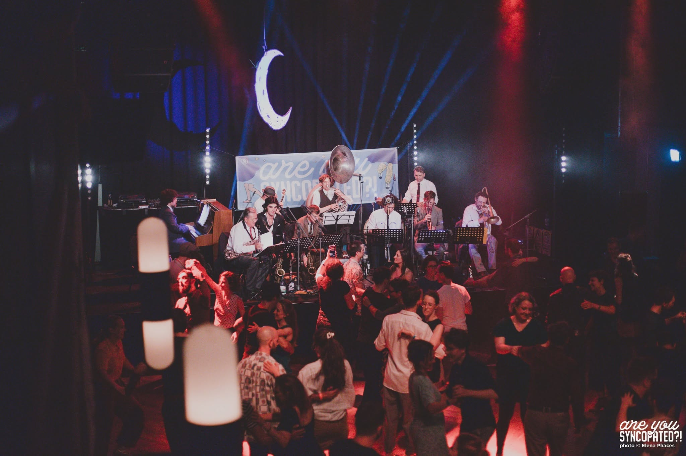

Cultural Project Development & Management
Concept development, strategic positioning, funding structures, partner coordination and long-term project planning.
François Perdriau
Author · Producer · Musician
Developing cultural projects, European cooperation programmes, arts education initiatives and artistic productions across Europe.
Berlin, Germany

Profile
Based in Berlin since 2011, François Perdriau is a cultural project developer, artistic director, producer and musician specialised in cultural project management, European cooperation programmes, arts education and jazz heritage initiatives.
Through initiatives such as Syncopation Society, Are You Syncopated?!, Swinging Europe Network, Backbeat Jazz Academy, Lilly & Elisabeth and The Jungle Jazz Band, he develops projects that connect artists, institutions, audiences and educational partners across Europe.

Facilitating international artistic exchange, arts education and cultural cooperation projects.
Key Figures
Fields of work
Concept development, strategic positioning, funding structures, partner coordination and long-term project planning.
Curating coherent artistic formats, leading creative teams and shaping projects with a clear cultural identity.
Building networks between artists, festivals, institutions and educational organisations across borders.
Designing educational formats that connect music, history, storytelling and social dialogue.
International cultural work
François Perdriau develops cultural projects in the fields of music, arts education, cultural heritage, audience development and international cooperation.
His experience includes Creative Europe projects, cultural festivals, educational programmes, touring productions, artistic direction, cultural mediation and cross-border partnerships.

Lilly & Elisabeth — a transdisciplinary project combining audio drama, live performance, education and cultural history.
Selected projects
Cultural production organisation developing festivals, educational programmes, artistic projects and international partnerships.
International festival dedicated to early jazz, cultural heritage, artistic exchange and education, with an edition budget of over €60,000.
European cooperation network supported by Creative Europe, bringing together 13 cultural partners across 9 countries.
Arts education programme funded by Kultur macht stark!, providing young people with access to music and cultural participation.
Transdisciplinary project combining audio drama, live performance, music, education and reflection on racism and cultural history.
International touring ensemble dedicated to early jazz, combining historical knowledge, strong stage presence and European festival experience.
Berlin-based recording and production studio specialising in acoustic music, heritage projects and international collaborations.

Large-scale artistic productions, festival programming and audience engagement through live cultural events.
Partners & support
François Perdriau’s projects have been supported by European, national and local cultural programmes and developed in cooperation with festivals, theatres, educational institutions and independent cultural organisations.
Contact
Available for selected collaborations, project development, consulting missions, artistic direction and international cultural partnerships.